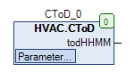

CToD (FB)¶
FUNCTION_BLOCK CToD
Short Description¶
Convertion of the Time-components minutes/hours to Time of Day (ToD)
Portrayal¶

Interfaces¶
Inputs¶
Outputs¶
Name Datatype
Range
Init-Value
Function
todHHMM TOD 0 ... 23:59:59:999 Time format (Time of Day)
Setpoints / Parameters¶
Name Datatype
Range
Init-Value
Function
iMM INT 0 Minutes (used format: MM Range: 0..59)
iHH INT 0 Festlegung der Stunden im Format HH (0..23)
Functional Description¶
General¶
These Functionblock is used for creating the time of day format Tod#HHMM from the two Time-components iMM and iHH.
The logical input limit of each component are monitored.
If a input is outside the configured bound, then the Output todHHMM is setted to TOD#0:0:0.
For example, this function can be used for the Input method within a visualisation object.
The logical Input Limits of each component are monitored and corrected if necessary.
The logical input limit of each component are monitored.
If a input is outside the configured bound, then the Output todHHMM is setted to TOD#0:0:0.
For example, this function can be used for the Input method within a visualisation object.
Visualization¶
Information¶
Element Authors
Date
Version Note
Function
Lukas Pfänder 04.2016 1.0 Initialversion
Programmierung Adam Bartod 04.2016 1.0 Initialversion
Test Jochen Reu / 06.2016 1.0 Initialversion
Documentation
Jochen Reu 10.2017 1.0 Initialversion
Revision Lukas Pfänder 10.2017 0.1.3.0 Documentation
Codesys¶
- InOut:
Scope Name Type Initial Comment Input iMM INT 0 Minutes (used format: MM Range: 0..59)
iHH INT 0 Festlegung der Stunden im Format HH (0..23) Output todHHMM TOD Time format (Time of Day)